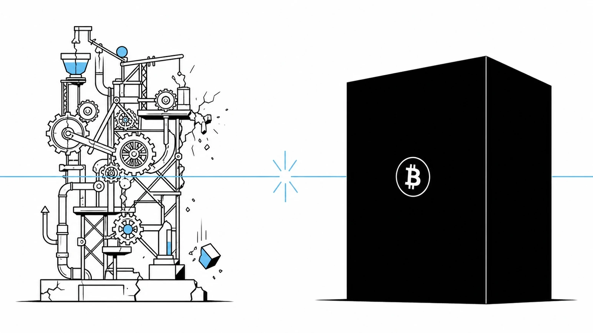

On 6 September 2026, a group of attackers — who later called themselves white-hats — walked away with roughly 4,000 BTC, worth about $320 million, from the Liquid Network. They did it in a few hours, from their laptops, by exploiting a bug in the software that Liquid's nodes use to validate transactions. Most of the funds were later returned, but around $47 million remained under the attackers' control at the time of writing. (Chainalysis analysis)
Liquid is not a scam project. It is built by Blockstream, one of the most respected engineering teams in Bitcoin. Its code is open source. Its federation includes serious exchanges and custodians. If a network of that caliber can lose $320 million in an afternoon, it is worth asking a very calm, very serious question:
If even the best-engineered Bitcoin sidechain can break, what should an inheritance protocol — a plan that must survive for decades — be allowed to depend on?
Our answer, from day one, has been the same. And this incident is not a surprise to us. It is a confirmation.
What actually broke on Liquid
The short version: Liquid's software caches the results of expensive cryptographic checks, so it does not have to re-verify the same data twice. A flaw in how those cached results were identified meant that new, invalid data could be mistaken for old, valid data. The attackers used this to create L-BTC that was never backed by real Bitcoin, then swapped that fake L-BTC for real BTC held in the network's reserves.
It is worth reading that twice. Bitcoin itself was not broken. The Bitcoin base layer, once again, did exactly what it was supposed to do. What broke was a layer built on top of Bitcoin — a sidechain with its own nodes, its own consensus rules, its own new code, and therefore its own new attack surface.
This is the pattern every serious builder in this space has learned to expect: every new layer adds new bugs. Not "might". Will. The only real question is when they are discovered, and by whom.
Why we refuse to build on new things
Bitcoin After Life is an inheritance protocol. That single sentence forces a very specific design philosophy on us.
An inheritance plan is not a trade. You do not close it at the end of the week. You set it up, and then you ask it to keep working for twenty, thirty, forty years — through software updates, through market cycles, through your own absence. Whatever we build on has to survive all of that.
So we made a promise to our users, and to ourselves: BAL will only use tools that have already survived the test of time on Bitcoin's base layer. Concretely, that means:
- No sidechains. Not Liquid, not any other. A sidechain is a separate network with its own rules and its own bugs, as this month proved.
- No Layer-2s. Lightning is wonderful for payments; it is not a place to park an inheritance.
- No exotic scripts. No fresh Miniscript contraptions, no vaults still being debated in mailing lists, no covenants that only exist on testnet.
- No new wallet built by us. Signing keys are sacred. We will not ask anyone to trust code we wrote last year with the coins their family will need.
What we do use is the boring, uninteresting, deeply tested core of Bitcoin — the parts that have been attacked by the entire world for fifteen years and have not moved.
The two pillars we allow ourselves
Electrum. Signing has been done in Electrum since 2011. It is one of the most audited pieces of Bitcoin software on Earth. Its seed generation draws 132 bits of entropy from the operating system's cryptographic RNG — one of the most reviewed pieces of code in any industry. The BAL plugin never signs anything on its own; it builds the transaction, shows it to you, and lets Electrum, with your keys and your hardware wallet, decide. Our attack surface for signing is therefore Electrum's attack surface — and that surface has held for a decade and a half. (Why Electrum, in detail)
nLockTime. This is not a clever script. It is not a smart contract. It is a consensus rule that has been part of Bitcoin since the very first version — a field that tells the network "do not accept this transaction before this date". Every full node on the planet enforces it. It cannot be bypassed by a compromised server, an impatient heir, or a bug in some intermediate layer. It is, quite literally, the same category of guarantee that stops people from double-spending.
That is it. That is the entire cryptographic surface of Bitcoin After Life: a signature made by Electrum, and a delay enforced by Bitcoin consensus. Nothing else stands between your heirs and the coins you want them to receive.
Will-Executors: nothing to hack
People often ask us next: "But what about the Will-Executor servers? Aren't they the weak link?" This is where the design gets almost anticlimactic — on purpose.
A Will-Executor is not a custodian. It does not hold your keys. It cannot modify the transaction it was given. It cannot redirect the funds. All it can do is store one already-signed, time-locked transaction, and broadcast it when the date arrives. It is closer to an automated mailbox than to a bank.
Its incentive to do its job is purely on-chain: every inheritance transaction includes a small Bitcoin fee for the executor, and that fee is only paid when the transaction actually confirms. Not when the server "promises". When the Bitcoin network says so. No confirmation, no fee.
On top of that, the network is decentralized and redundant. When you set up your inheritance, the plugin creates one copy of the transaction for each Will-Executor you chose from the public WeList directory. Only one of them needs to still be online at the delivery date. If ten servers hold a copy and nine disappear, the tenth still executes your will and collects the fee.
Now imagine an attacker who wants to hurt BAL. What is the target?
- They cannot steal from the executor — the executor has no keys.
- They cannot alter the transactions — they are already signed.
- They cannot execute early — Bitcoin consensus rejects the transaction before the locktime.
- They cannot bribe the executor to "hold" your will — someone else's redundant copy will broadcast anyway, and take the fee.
There is almost nothing to attack. And that, again, is the point.
Contrast with Liquid
Compare that with what the Liquid attackers had to work with: a novel network, a novel token (L-BTC), novel Confidential Transactions, novel range-proof caching, and a federation of nodes that mint and redeem representations of Bitcoin. Every one of those "novels" is a place where a bug can live. This month, one of them did.
None of this is a criticism of Blockstream. They responded with transparency, they patched quickly, they coordinated the return of funds. That is exactly how a mature team should behave. But the incident makes the underlying trade-off unmistakable: more features on top of Bitcoin means more code, more code means more bugs, more bugs means more risk over time. For a trading layer that risk may be acceptable. For an inheritance plan measured in decades, it simply is not.
Built for atomic bombs, hackers, and coming AIs
We say this only half-jokingly: the Bitcoin After Life protocol is designed to be hacker-proof, AI-proof, and — in the very long run — as close to "atomic-bomb-proof" as software allows.
What we mean, concretely:
- No single server can be attacked into failing the user. The Will-Executor network is decentralized, redundant, and incentivized by on-chain fees. Kill a server; another one takes over.
- No novel cryptography is on the critical path. The security of your inheritance comes from Bitcoin signatures and nLockTime — primitives that have survived a decade and a half of adversarial review. No custom scripts to be broken by an unknown class of attack.
- No secret code to reverse-engineer. The plugin and the executor are open source, MIT-licensed, and small enough to be audited by a serious reader — human or AI.
- AI cuts both ways, and we welcome it. As we wrote in "It all starts with the seed", the Coldcard seed flaw was likely found by an AI reading old public code. That capability is now in every user's hands: you can hand our code to a capable model tomorrow and ask, in plain English, where can this break? An inheritance protocol should welcome that scrutiny, not fear it. Ours does.
- The plan renews itself. BAL is designed for periodic refresh every two to three years, so lessons like Liquid's are absorbed before they become tomorrow's crisis.
The Liquid hack did not shake our design. It reinforced it. Every place BAL could have added a shortcut — a sidechain for cheaper fees, a new script for cleverer conditions, a proprietary wallet for a nicer UX — is a place where, in 2026, someone else lost $320 million.
What this means for you
If you are planning a Bitcoin inheritance, the practical takeaways from this month are simple:
- Do not park inheritance funds on a sidechain or an L2. Not on Liquid, not on Lightning channels, not on any bridge or wrapper. Keep the coins on the Bitcoin base layer.
- Distrust anything shiny. "New" is a feature for traders and a liability for heirs. Prefer the software that has been publicly attacked for the longest.
- Ask where the trust is. If any part of an inheritance plan says "trust our server / trust our custodian / trust our federation", that part is where it will eventually fail. Replace it with something a consensus rule enforces.
- Verify. Read the code, or ask an AI to read it for you, and do it again after every update. This is now a habit anyone can afford.
Bitcoin After Life is deliberately narrow. We do exactly one thing — a time-locked, redundantly-executed inheritance transaction — and we do it on top of the two most tested primitives in Bitcoin. We refuse features that would force us onto experimental ground. That refusal is not conservatism for its own sake. It is the only honest posture for a protocol whose promises must outlive its authors.
The Liquid attackers wrote a $320 million reminder into the blockchain this month. Our reading of it is the same one we started with:
Don't trust. Verify. Then, and only then, plan — on bedrock.
The plugin, the executor, and the full protocol walkthrough are open source and available at bitcoin-after.life. Start on testnet. Read the code. Bring an AI. Break it if you can — that is exactly what we want.
This article is for informational purposes only and does not constitute legal, tax, or security advice. Facts about the September 2026 Liquid Network incident reflect public reporting and Blockstream's advisories at the time of writing; consult the vendor's official communications for up-to-date guidance.